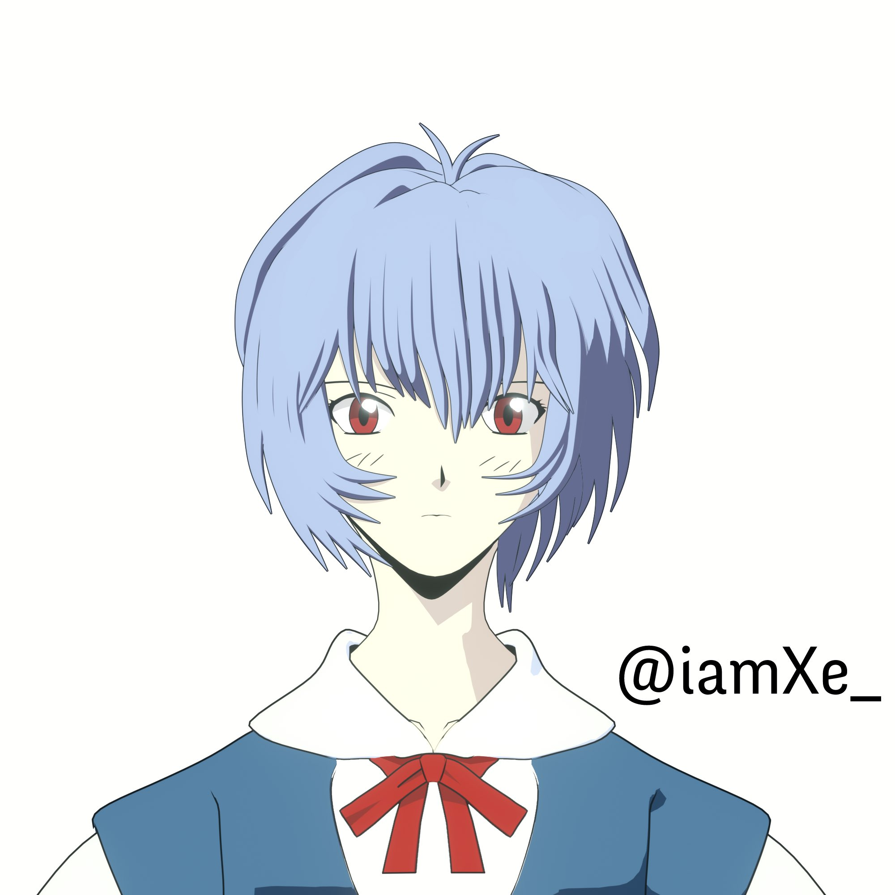
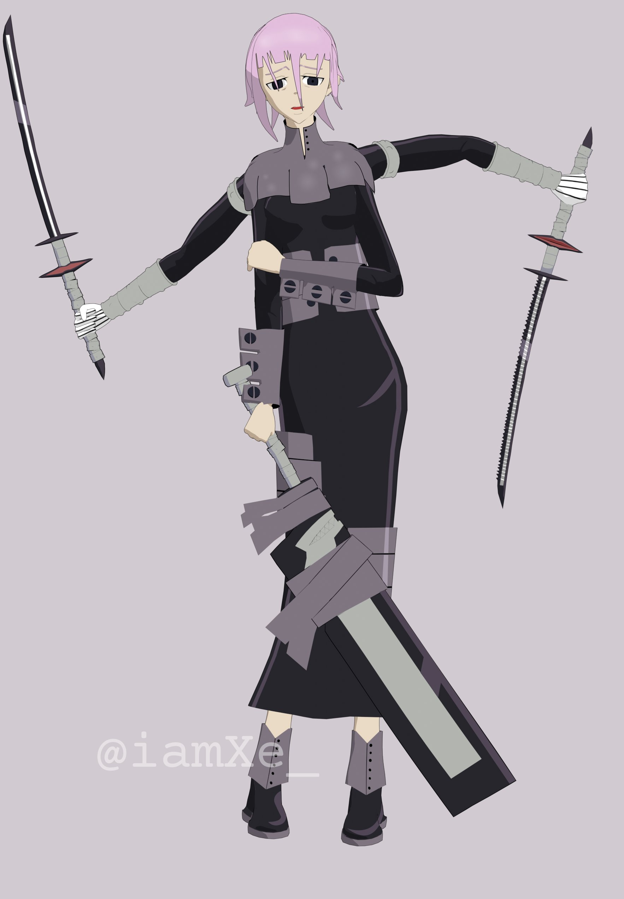

Raef Suarez
I love making manga and anime inspired 3D models. I was first inspired by 3D models when I had seen them in video games such as Guilty Gear Strive and Halo. Since then, I had always looked up to the developers that made that happen and wanted to do it myself. Thus, I have been modeling in Blender for 2 years now and want to possibly pursue a job in modeling. I have a real passion for modeling and really love doing it! I make a lot of 3D models for use in Vr Chat, so I have experience in rigging, weight painting, and keeping models low-poly.
